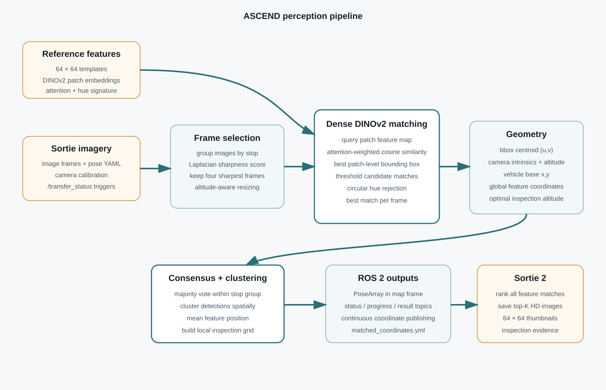

Selected project
ASCEND: Autonomous Aerial Surveyor
An autonomous aerial inspection pipeline that converts reference visual features and sortie imagery into global feature locations for follow-up inspection. I worked on the feature-localization pipeline and integration, alongside the autonomous charging/docking system.
Problem
The system must search a large area, recognize specific physical landmarks from small reference images, estimate where those landmarks are in the world and return structured coordinates for a second inspection pass. The difficulty is that aerial images vary in scale, sharpness, illumination and viewpoint, while several frames may correspond to the same physical feature.
Perception pipeline
Reference encoding
Each 64×64 reference is embedded with DINOv2. Patch features from the reference region are normalized, and attention from the final transformer layers is used as a spatial weighting map.
Frame quality filtering
Sortie frames are grouped by capture stop and ranked using Laplacian variance. Only the sharpest frames are processed, reducing redundant inference and limiting blur-driven false matches.
Dense feature matching
DINOv2 patch tokens are converted into a dense feature map. Attention-weighted cosine similarity is evaluated over the query image to localize the best matching patch region for every reference feature.
Geometric localization
The matched bounding-box centroid is converted into a metric offset using camera intrinsics and flight altitude, then combined with the frame's stored vehicle position to estimate a global feature coordinate.
False-positive rejection
A circular hue signature rejects structurally similar but chromatically inconsistent candidates. This acts as a lightweight secondary check after the learned feature match.
Consensus and outputs
Detections are majority-voted within each stop group, spatially clustered into physical instances, converted into inspection grids and published through ROS 2 as a PoseArray and structured YAML output.
Architecture

Engineering details and outputs
- Camera calibration can be loaded from YAML; calibrated focal lengths and optical centre are used when available.
- Altitude-dependent resizing keeps the physical scale of the template approximately consistent in the dense patch search.
- Multiple detections of the same reference are spatially clustered, allowing separate physical instances to be retained rather than collapsed into one label.
- The ROS 2 node publishes status, progress, match results and a map-frame PoseArray, and continuously republishes the final coordinates for downstream mission logic.
- The team finished in the Top 20 of roughly 600 teams in the ISRO Robotics Challenge.
Diagrams and demos